Sommaire
Pages Principales
Service
Cette page est la page d'accueil de ce site. Elle ne sert pas a grand chose a part pour noter vos différentes actions pendant votre service (10-17 etc...) afin que vous puissiez copier coller dans le récapitulatif a la fin de votre service.
Rapports de Soin
Cette page sert à rentrer toutes les informations de vos patients pour l'envoyer dans le salon #Rapports.
Zone d'aperçu : Visualisez votre rapport en temps réel.
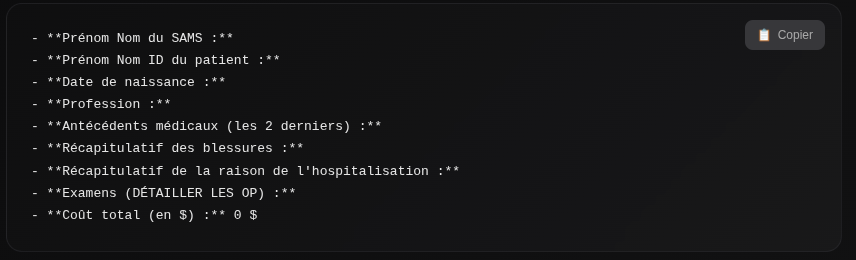
Informations SAMS : Votre nom et prénom.
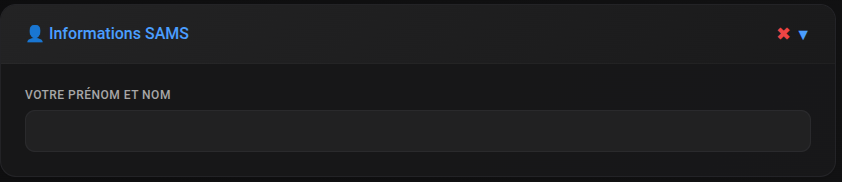
Infos patient : Nom, prénom, date de naissance, profession.
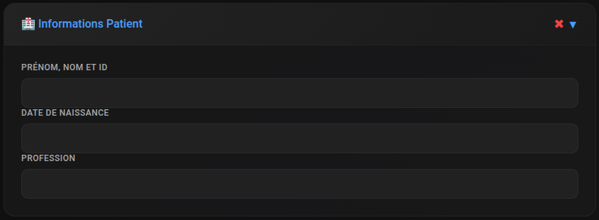
Historique médical : Antécédents, blessures constatées, raisons de l'hospitalisation (avec recherche auto Trello).
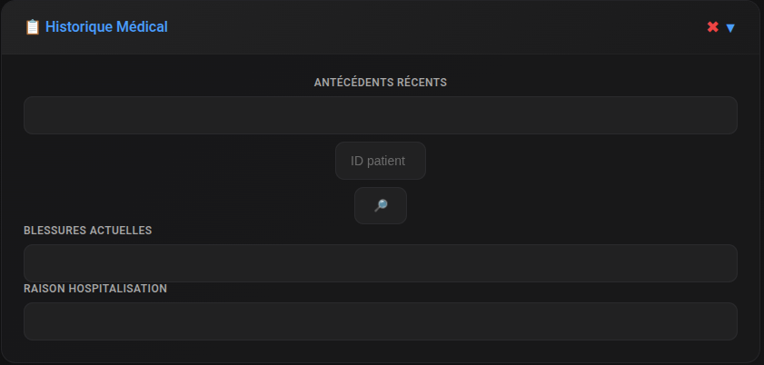
Examens : Détails des actes effectués.
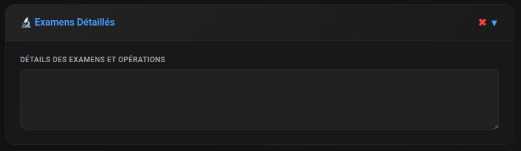
Coûts : Récapitulatif financier.
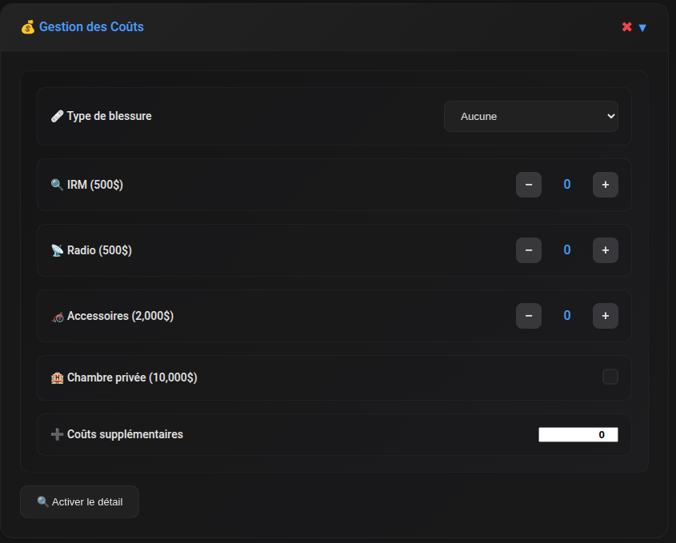
Accès Trello : Boutons rapides vers les différents Trello.
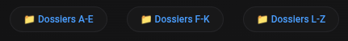
Recherche automatique : Permet de trouver les antécédents directement sur Trello.
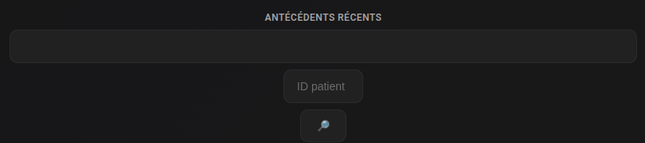
Détail facturation : Affiche tous les coûts avec leurs détails.
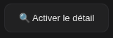
Copier : Copiez le rapport pour le partager.
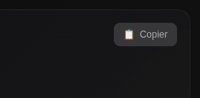
Créer/Réinitialiser : Créez plusieurs rapports pour les finir ultérieurement ou réinitialisez le formulaire.
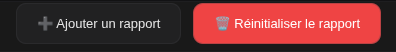
Refus de Soins
Cette page sert à rentrer les informations des personnes refusant les soins lors des interventions.
Zone d'aperçu : Visualisez votre rapport en temps réel.
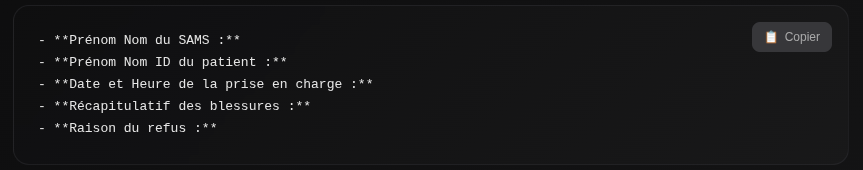
Informations SAMS : Votre nom et prénom.
Infos patient : Nom, prénom, date et heure du refus.
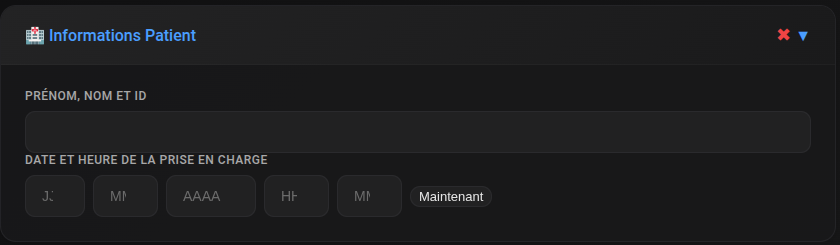
Détails du refus : Blessures constatées et raison du refus de soins.
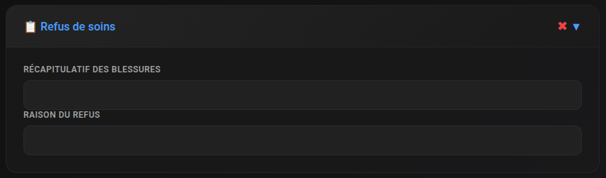
Copier : Copiez le rapport pour le partager.
Gérer les rapports : Créez plusieurs rapports ou réinitialisez le formulaire.
Morgue
Cette page sert à rentrer les informations des personnes décédées à la morgue (Coma, pas C.K.).
Zone d'aperçu : Visualisez votre rapport en temps réel.
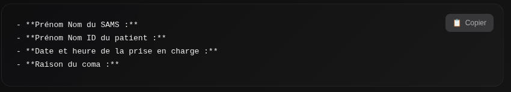
Informations : Votre nom et prénom, nom et prénom du patient.
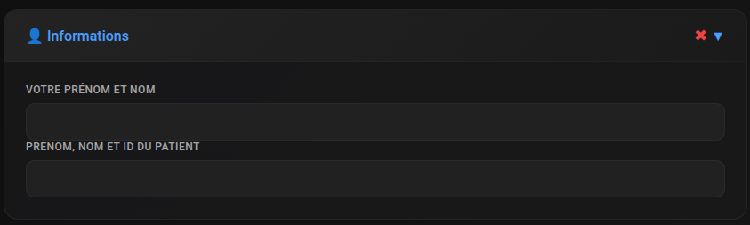
Prise en charge : Date, heure du décès et raison du coma.

Copier : Copiez le rapport pour le partager.
Gérer les rapports : Créez plusieurs rapports ou réinitialisez le formulaire.
Impayés
Cette page sert à rentrer les informations des personnes ayant des impayés.
Zone d'aperçu : Visualisez votre rapport en temps réel.
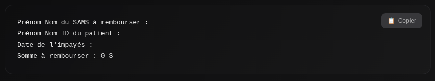
Informations : Votre nom et prénom, nom et prénom du patient.
Détails impayé : Date et montant de l'impayé.
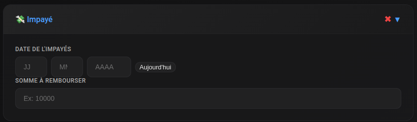
Copier : Copiez le rapport pour le partager.
Gérer les rapports : Créez plusieurs rapports ou réinitialisez le formulaire.
LSPD
Cette page sert à rentrer les informations des LSPD se faisant soigner.
Zone d'aperçu : Visualisez votre rapport en temps réel.
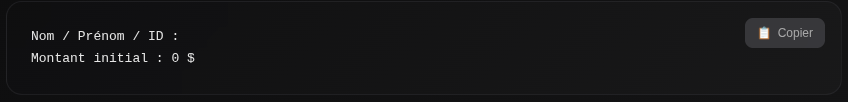
Informations : Le nom et prénom du LSPD, ainsi que le montant.
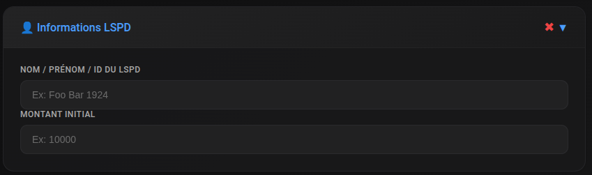
Copier : Copiez le rapport pour le partager.
Gérer les rapports : Créez plusieurs rapports ou réinitialisez le formulaire.
Carte
Cette page est une belle nouveauté, elle vous permet de connaitre les zones et endroits de la carte
à connaitre.
Manuels
Cette page sert à recenser tous les manuels utilisés pour toutes les formations de la SAMS.
Que ce soit les manuels des formations, ou des cours.
Système de Tri : Utilisez les filtres pour trouver rapidement le manuel souhaité.
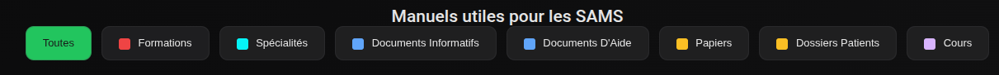
Tous les cours référencés en "cartes" : Interface facilitant la recherche de manuels.
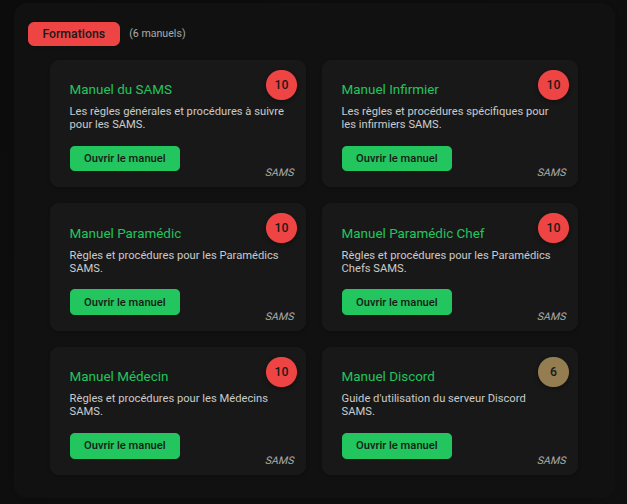
Système d'importance : Apprenez quels manuels sont les plus importants à connaître.
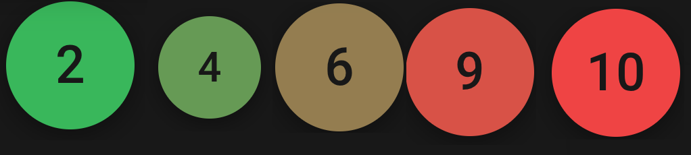
Suggestions/Bugs/Questions
Cette page sert à recueillir vos suggestions, signaler des bugs ou poser des questions concernant la SAMS, ou bien a poser vos questions.
Suggestions : Ici envoyer toutes vos suggestions d'améliorations pour le système.
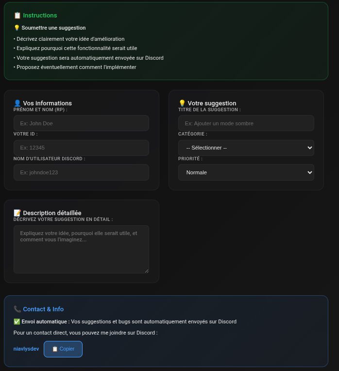
Bugs : Envoyez tous les bugs trouvés pendant l'utilisation de ce site.
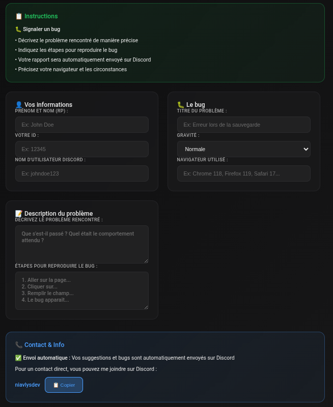
Questions : Posez toutes vos questions concernant ce site (Je suis le seul a répondre (niavlysdev / Jason Parker), je réponds en général dans les 30mn a 2h).
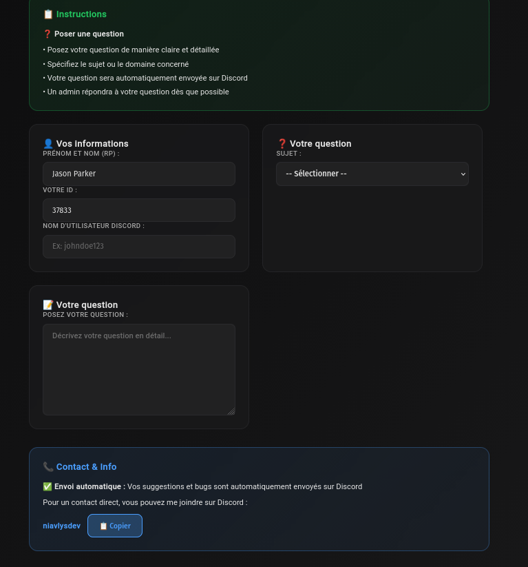
Hiérarchie
Cette page sert à recenser tous les membres de la hiérarchie de la SAMS, ainsi que des spécialités.
Hiérarchie Générale : Vous y retrouverez tous les membres de la direction générale.
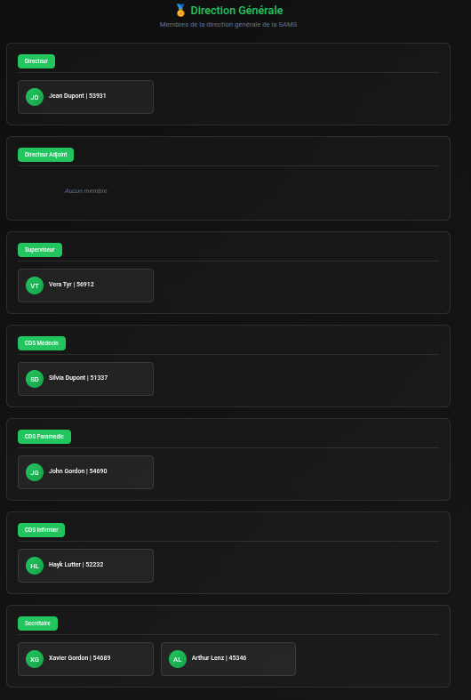
Spécialités : Vous y retrouverez tous les membres des différentes spécialités.
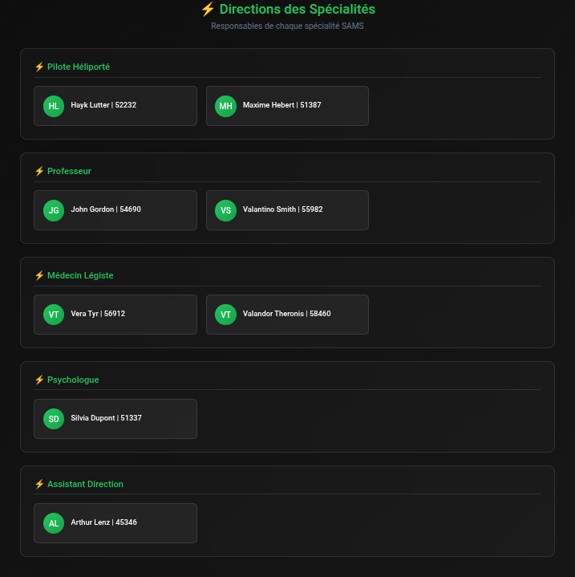
Paramètres
Cette page sert à régler tous les paramètres de ce site.
Cette page est très importante car elle permet de configurer le site selon vos préférences et surtout
gérer vos spécialités et vos grades (ce qui vous débloqueras des pages (comme la page PH ou la page Professeur)).
Paramètres Personnels : Vous pourrez y mettre votre nom, prénom, id, grade, spécialité etc...
Toutes ces informations seront utilisées dans les rapports de soin et autres pages (automatiquement).
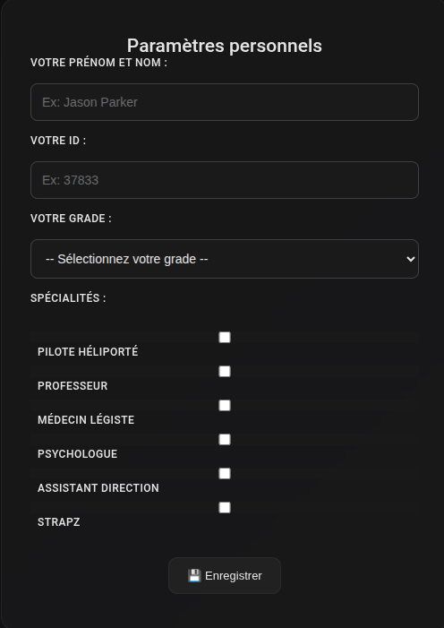
Signatures : Vous pourrez y gérer vos signatures personnelles (en texte ou en dessin).
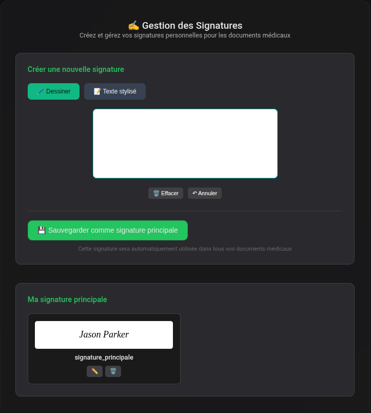
Pilote Héliporté
Cette page sert à rentrer les informations de vos interventions en tant que Pilote Héliporté.
Apercu : Vous y verrez votre rapport.
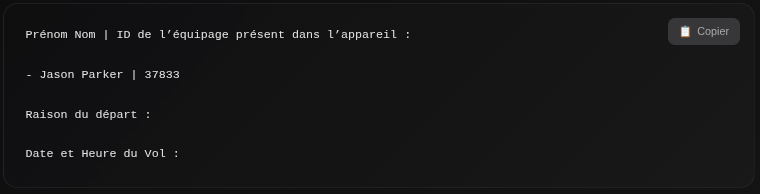
Equipage : Vous pourrez y renseigner les membres qui vous ont accompagné.
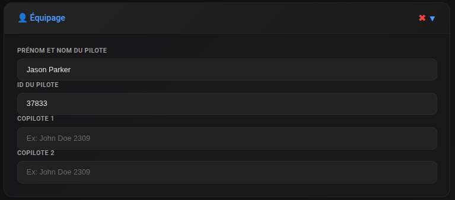
Informations Sur L'intervention : Vous y renseignerez la raison de l'intervention ainsi que la date et l'heure de celle-ci.
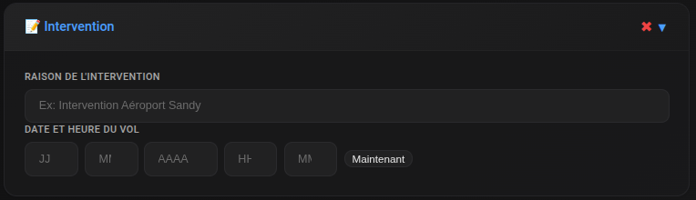
Copier : Copiez le rapport pour le partager.
Gérer les rapports : Créez plusieurs rapports ou réinitialisez le formulaire.
Professeur - Rapport et Note
Cette page sert à rentrer toutes les informations pour vos rapports de Formations.
Apercu : Vous y verrez votre rapport.
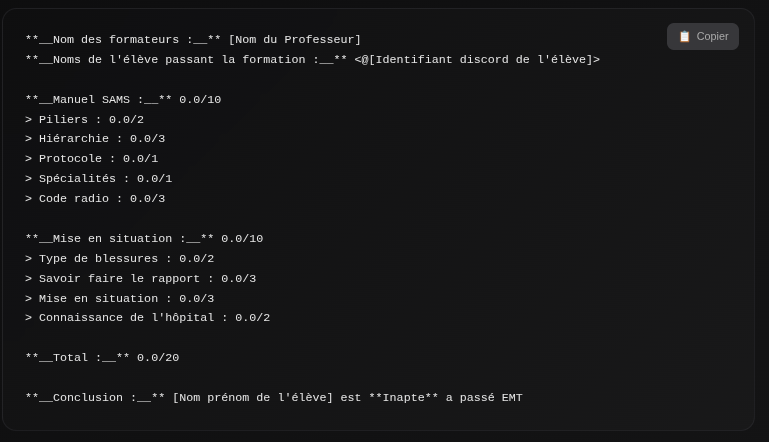
Formateurs : Vous y renseignerez les formateurs présents lors de la formation.
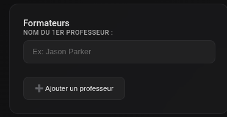
Eleve : Vous y renseignerez le nom, le prénom et l'id discord de l'élève.
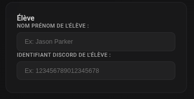
Note Manuel SAMS : Vous y renseignerez la note obtenue par l'élève pour chaque sous-catégorie.

Note Mise en Situation : Vous y renseignerez la note obtenue par l'élève pour chaque sous-catégorie.
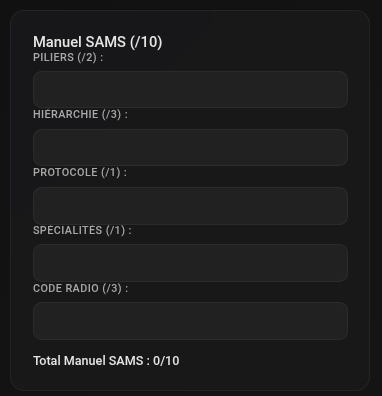
Résultat : Vous y verrez la note final de l'élève ainsi que si il est apte ou non.
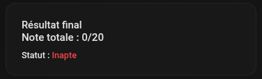
Copier : Copiez le rapport pour le partager.
Professeur - Demande de Points
Cette page sert à rentrer toutes les informations pour vos demandes de points.
Apercu : Vous y verrez votre demande.
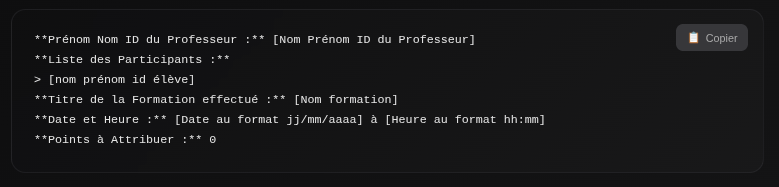
Formateurs : Vous y renseignerez les formateurs présents lors de la formation.
Participants : Vous y renseignerez les noms, prénoms et id des participants de la formation.
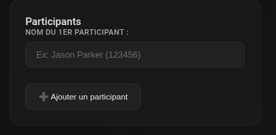
Details de la Formation : Vous y renseignerez le titre, la date, l'heure et les points a attribuer pour la formation.
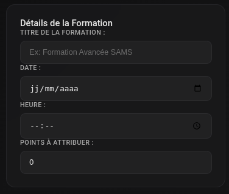
Copier : Copiez le rapport pour le partager.
Informations et Notifications
Ces fonctionnalités vous permettrons de vous tenir au courant de toutes les dernières nouveautés du site et de ses changements.
Version Actuelle : Vous y verrez la version actuelle du site.
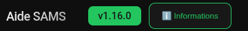
Informations : Vous pourrez cliquer sur ce bouton pour accéder a toutes les informations des changements et les informations sur le projet.
Informations Générales : Vous y verrez toutes les informations générales du projet.
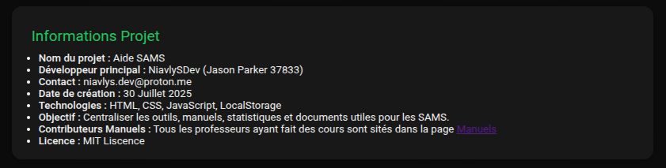
Données : Vous y verrez toutes les informations sur données stockées ou non.

Changelog : Vous y verrez toutes les informations sur les changements apportés au projet.
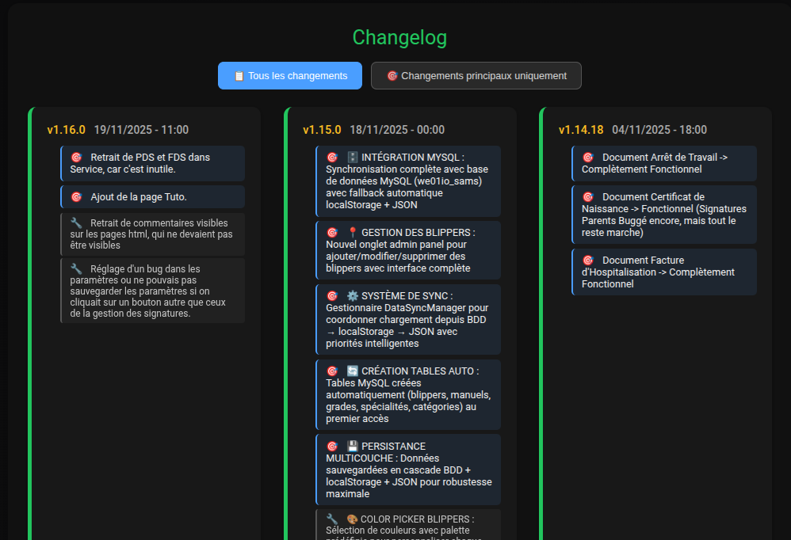
Pages Principales
Que deviennent mes données?
Données : Vous y verrez toutes les informations sur données stockées ou non.
Stockage des données : Toutes les données que vous créez et sauvegardez (paramètres personnels, rapports, signatures, etc.) sont exclusivement stockées dans le localStorage de votre navigateur. Aucune donnée personnelle ne quitte votre appareil sans votre consentement explicite.
Conformité RGPD : Cette application respecte strictement les réglementations RGPD en vigueur en France. En tant que créateur, je n'ai accès qu'aux données publiques rentrées par l'administration (carte, manuels, hiérarchie). Vos données personnelles ne transitent jamais par mes serveurs.
Informations sensibles : Les informations sensibles telles que votre nom, prénom, ID, grade, spécialités et signatures ne sont jamais envoyées à des tiers. Elles restent exclusivement dans votre navigateur et ne sont utilisées que localement pour générer vos documents.
Accès administrateur : Seules les données publiques suivantes sont accessibles via l'administration : la carte GTA5 (zones et points d'intérêt), les manuels de formation, et la hiérarchie de la SAMS. Tout le reste reste confidentialité garantie.
Transparence : Vous avez le contrôle total de vos données. Vous pouvez à tout moment effacer vos données locales via les boutons "Effacer Local" disponibles dans les différentes pages, ou contacter le développeur pour toute demande relative à vos données.
Chiffrement : Les données stockées localement sont en texte brut dans votre navigateur. Pour une sécurité maximale, assurez-vous de ne jamais partager votre profil de navigateur ou de ne pas laisser votre ordinateur déverrouillé lorsque vous l'utilisez.
Contact et demandes : Pour toute question concernant vos données personnelles, une demande d'accès, de rectification ou de suppression, vous pouvez contacter le développeur à : niavlys.dev@proton.me
Autres Questions a venir...
Questions : N'hésitez pas a aller dans la page
Pour poser vos questions, elles seront ici par la suite si elles sont intéressantes.